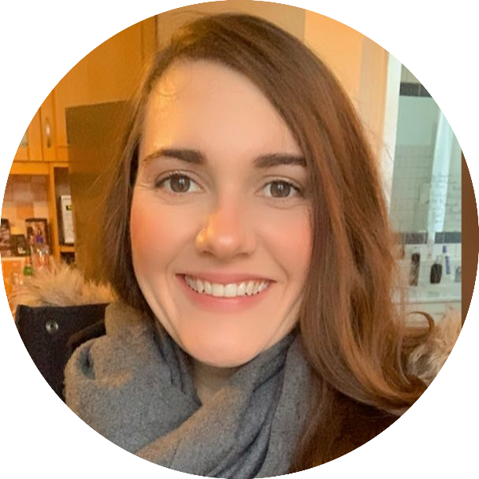

|  |
Priscilla Riese
üë©‚Äçüíª Full Stack Web Developer
I had an important step for my career as a Full Stack Web Developer because I could notice that I like to deal with designers, planning and deadlines.
Through my portfolios, I had to learn and develop certain skills such as responsibility, flexibility and good communication.
I have used HTML, CSS, Javascript for the front end and Node, React, MongoDB, Web3 and DApps for the back end.
These activities require diligence, commitment, discipline, organizational skills e creativity. - Significant skills for a full stack web developer.
üíª Knowledge of HTML, CSS, Javascript, Node, React, MongoDB, Web3 and DApps.
Nationality: Brazilian and German
|